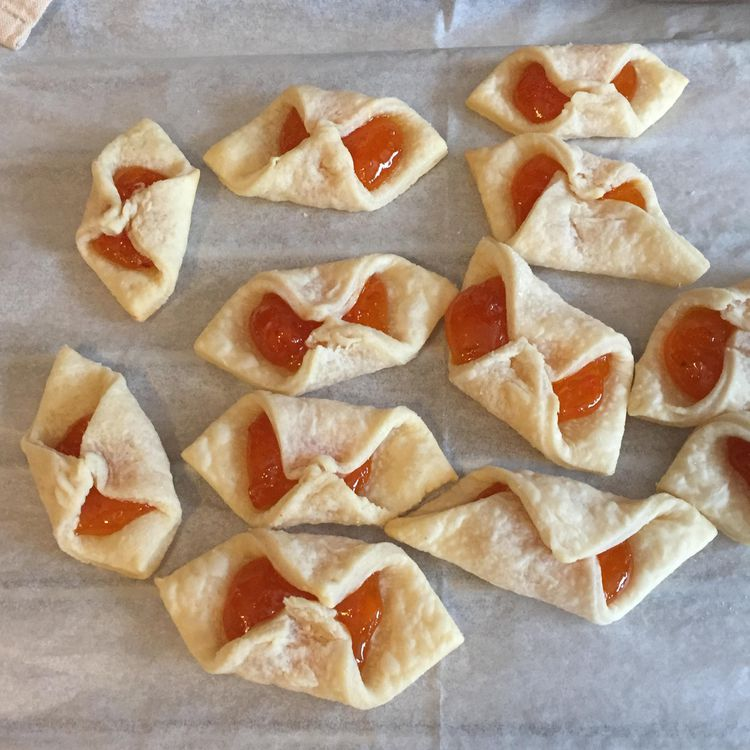

Home
Cream Cheese Kolacky

Description
A kolacky is a bite-sized pastry with Czech origins. The rich dough (which is made with cream cheese, butter, and flour) can feature different fillings, but jam is one of the most popular choices.
Ingredients
- 3 ounces cream cheese
- 1/2 cup butter, softened
- 1 cup all-purpose flour
- 1/2 cup any flavor fruit jam
- 1/3 cup confectioner's sugar for decoration
Steps
- Mix cream cheese and butter together in a bowl until smooth.
- Gradually stir in flour until just combined. Shape dough into a ball; cover the bowl and refrigerate for at least 3 hours or overnight.
- Preheat the oven to 350 degrees F.
- Roll out dough on a floured pastry board to a thickness of 1/8 inch. Cut into 2 1/2-inch squares and place about 1/2 teaspoon of jam or preserves in the cetner.
- Overlap opposite corners and pinch together. Place on ungreased baking sheets.
- Bake in the preheated oven until golden, about 10 to 12 minutes. Cool on wire racks. Dust kolacky lightly with confectioner's sugar.